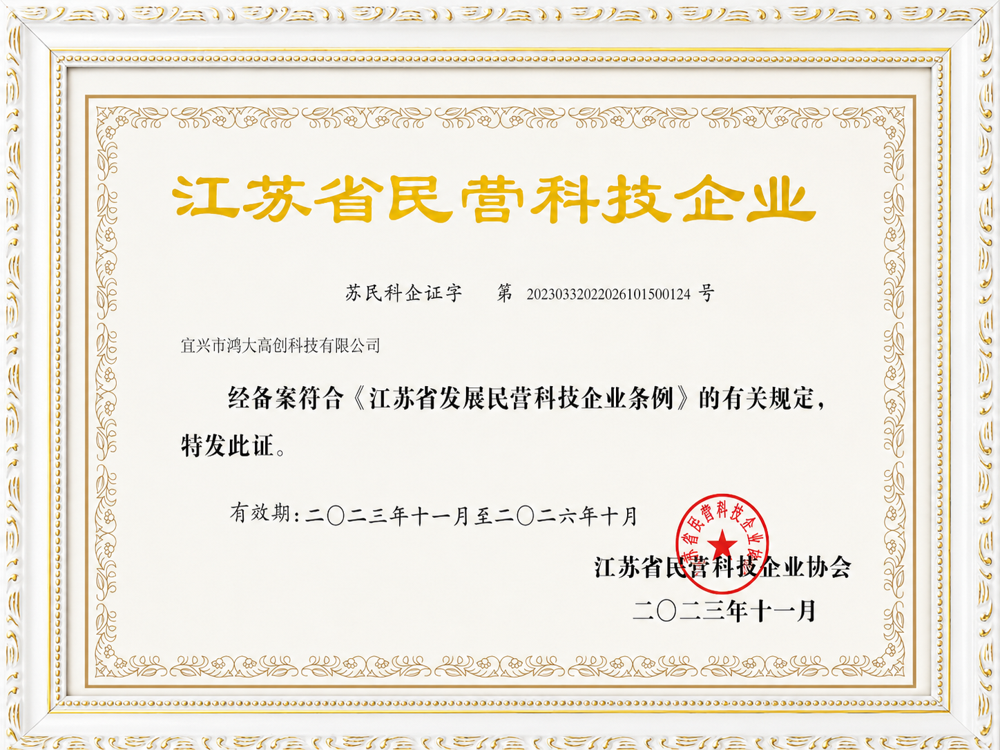

About HDPTH
YIXING Hongda High-tech Innovation Technology Co.,Ltd manufactures high-tech nonwoven converting machinery under the HDPTH brand.
Company Profile
Source manufacturer for nonwoven converting solutions.
Founded in 2005, HDPTH focuses on high-speed slitting machines, nonwoven rewinding machines, perforating production lines, automatic knife systems and auxiliary converting equipment.
- 6,000 m2 manufacturing base
- 60+ elite team members
- Serving Southeast Asia, Middle East, Europe, North America and South America
- Custom equipment configuration for international B2B buyers
- Global contact: Wilson Wu, WhatsApp +86 13645700210

Founder & Market Understanding
Close to overseas customer requirements.
HDPTH's international market visits help the team understand production needs, communication expectations and decision factors from overseas manufacturers. This section can be expanded with verified founder biography and customer visit stories.
Certificates
Qualification documents for supplier review.
HDPTH displays technology enterprise recognition, high-tech product documentation and industry association memberships to support overseas buyer due diligence.
- Jiangsu private science and technology enterprise recognition
- Wuxi high-tech product certificate for high-speed full servo slitting machine
- Nonwovens and paper-related industry association membership


International Communication
Machine advice from people who understand production requirements.
A branded technical advisor visual helps buyers connect the website with a real service process: material review, width and speed confirmation, machine configuration and quotation follow-up.
- Clear technical communication before quotation
- Application-based machine configuration support
- Trust-building branded service image for overseas buyers